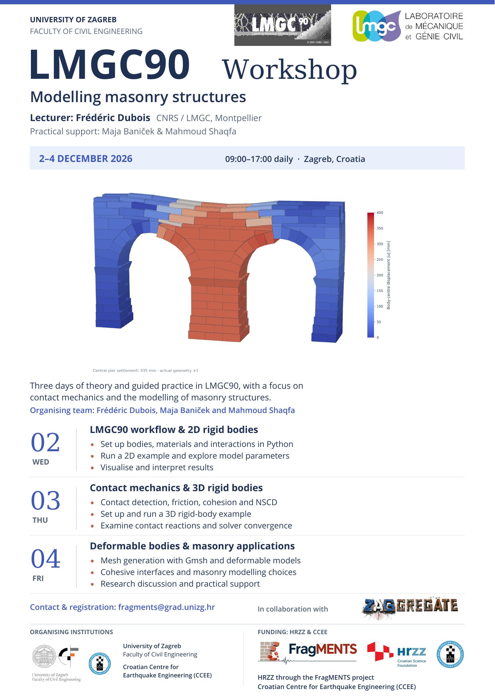

Workshop · 2–4 December 2026
LMGC90 Workshop: Modelling masonry structures
Join Frédéric Dubois in Zagreb on 2–4 December 2026 for three days of theory and guided practice in LMGC90, with a focus on contact mechanics and masonry modelling.
Programme & registration ↗